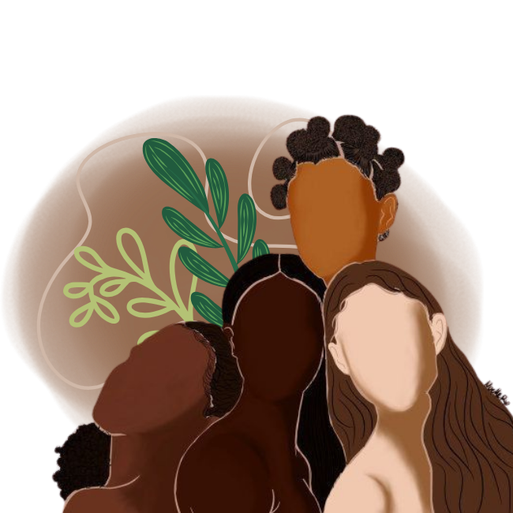
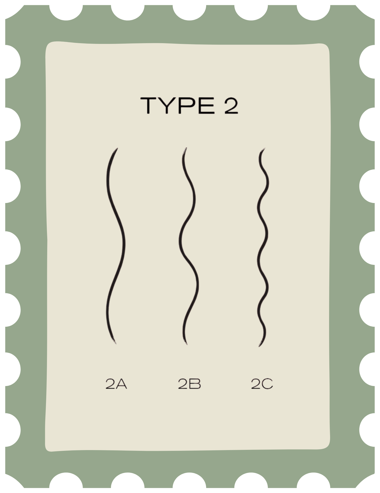
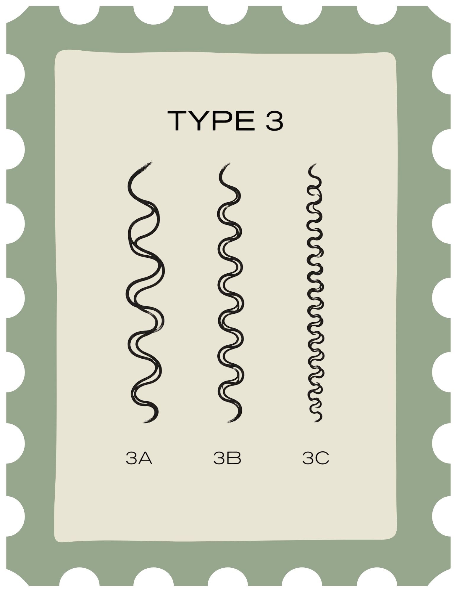
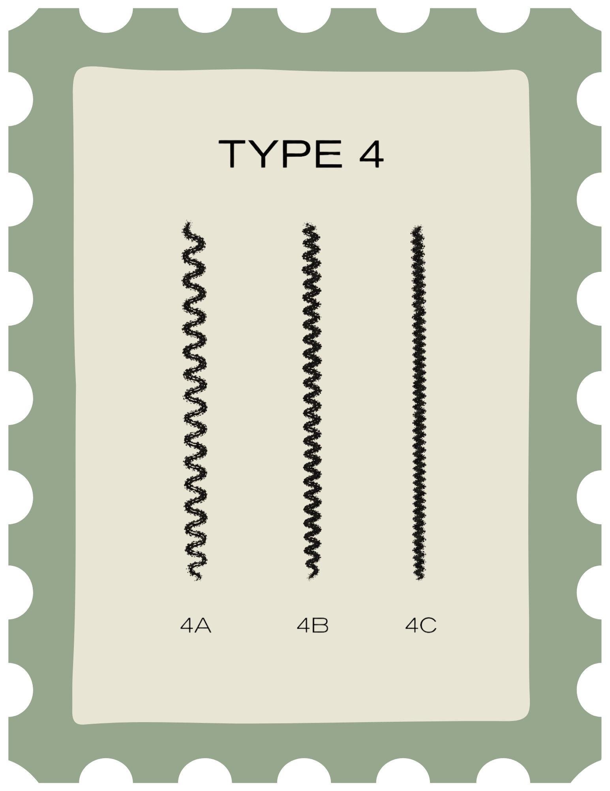

Início
Cuvaturas
Produtos
Cabelos saudáveis começam com conhecimento
Entenda seu tipo de cabelo e encontre os cuidados, dicas e produtos ideais para manter seus fios saudáveis e bonitos.

Curvaturas:



Marcas Recomendadas:
Ver produtos recomendados →